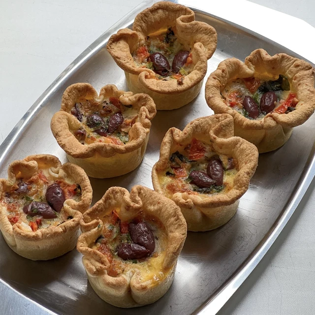

Набір · 6 порцій
Тарти з оливкою Каламата
950 грн
Опис
Класика від Pie Garden – унікальне пармезанове тісто, томати, моцарела й пікантні оливки Каламата. Ідеально до вина, перекусу або неспішного обіду 🫖склад: оливки Каламата, томати, моцарелла, пармезан, базилік, борошно, масло вершкове, яйця, соус Персилад (петрушка, цибуля порей, часник, лайм, олія оливкова), італійські трави, сіль